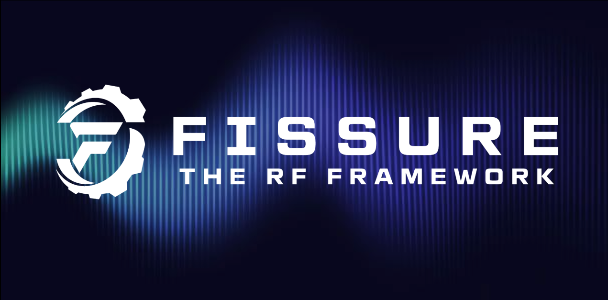

FISSURE - The RF Framework¶
https://github.com/ainfosec/FISSURE
Frequency Independent SDR-based Signal Understanding and Reverse Engineering
FISSURE is an open-source RF and reverse engineering framework designed for all skill levels with hooks for signal detection and classification, protocol discovery, attack execution, IQ manipulation, vulnerability analysis, automation, and AI/ML. The framework was built to promote the rapid integration of software modules, radios, protocols, signal data, scripts, flow graphs, reference material, and third-party tools. FISSURE is a workflow enabler that keeps software in one location and allows teams to effortlessly get up to speed while sharing the same proven baseline configuration for specific Linux distributions.
The framework and tools included with FISSURE are designed to detect the presence of RF energy, understand the characteristics of a signal, collect and analyze samples, develop transmit and/or injection techniques, and craft custom payloads or messages. FISSURE contains a growing library of protocol and signal information to assist in identification, packet crafting, and fuzzing. Online archive capabilities exist to download signal files and build playlists to simulate traffic and test systems.
The friendly Python codebase and user interface allows beginners to quickly learn about popular tools and techniques involving RF and reverse engineering. Educators in cybersecurity and engineering can take advantage of the built-in material or utilize the framework to demonstrate their own real-world applications. Developers and researchers can use FISSURE for their daily tasks or to expose their cutting-edge solutions to a wider audience. As awareness and usage of FISSURE grows in the community, so will the extent of its capabilities and the breadth of the technology it encompasses.
History¶
FISSURE is a tool suite and RF framework consisting of dedicated Python components networked together for the purpose of RF device assessment and vulnerability analysis. FISSURE stemmed from the need to quickly identify and react to unknown devices or devices operating in unidentified modes in a congested RF environment. Over the years it has grown into an in-house laboratory tool used by AIS for nearly all things RF. In addition to its analysis and protocol cataloguing capabilities, it doubles as a repository for tried-and-true code developed by AIS along with popular third-party open-source software tools frequently used by the community. FISSURE can also be used to reliably stage Linux computers and bypass some of the more complicated software installs.
FISSURE was released to the public in August 2021 and is continuously growing. While it has an impressive list of capabilities, it has yet to reach its full potential. The framework embodies a robust approach and provides easy-to-use mechanisms for adding content. It is expected to always be in a state of maturation to continuously meet the needs of advancing technology.
Contributing¶
Suggestions for improving FISSURE are strongly encouraged. If you have any thoughts for new features, design changes, RF protocols, analysis tools, hardware, or targets, please contact Chris Poore via the GitHub Discussions and Issues tabs, the Discord channel, by submitting a pull request, or through email to poorec@ainfosec.com.